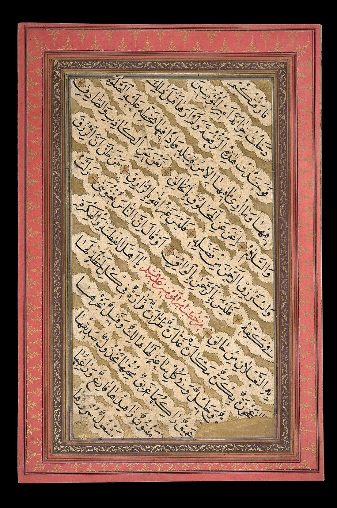

סיפורים מרתקים על השפה הערבית, תרבות, היסטוריה, אוכל ומוזיקה, ועל הקסם של ללמוד שפה חדשה.

מאמר מוביל · תרבות ושפהמסע בן אלף וחמש מאות שנה: משירת המדבר, דרך תור הזהב של המדע, ועד הטעמים והמנהגים שחיים איתנו עד היום.
קראו את המאמר →מה קורה במוח כשלומדים שפה, ואיך זה מחזק זיכרון, ריכוז ויצירתיות בכל גיל.
בקרובהמסע התרבותי של העולם הערבי: מהקפה והאוכל ועד המוזיקה והכנסת האורחים.
בקרובהמדריך הפרקטי: איך מתחילים נכון, מה באמת עובד, ואילו טעויות לחסוך מעצמכם.
בקרובאיך נולדות שפות, איך הן מתפתחות, וכמה הן קשורות זו לזו יותר משחשבתם.
בקרוב